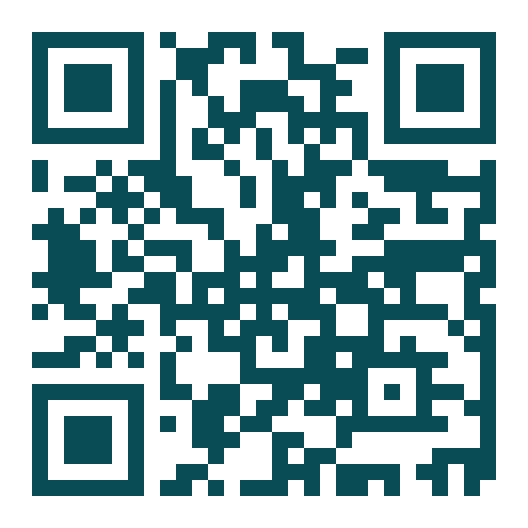

Tide
Menopausa Informada: um chatbot baseado em evidências.
Menopausa + desinformação + IA que alucina são um risco em saúde. O Tide é um chatbot em português-BR que responde com base em diretrizes oficiais, mostra as fontes e gera um relatório clínico em PDF para a consulta.
48%IA comum
(sem RAG)
(sem RAG)
→
93%Tide
(com RAG)
(com RAG)
respostas corretas
+ 0 respostas inseguras
(de 12) · alucinações 29 → 4
+ 0 respostas inseguras
(de 12) · alucinações 29 → 4
Experimente agora
Converse com o protótipo do Tide no seu celular.
Aponte a câmera
Conheça o projeto
Proposta completa, modelo de negócio (Canvas) e plano.
Aponte a câmera